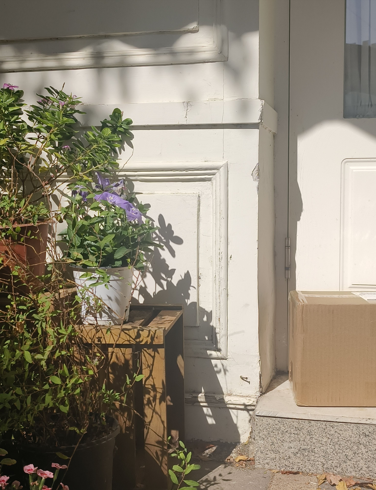
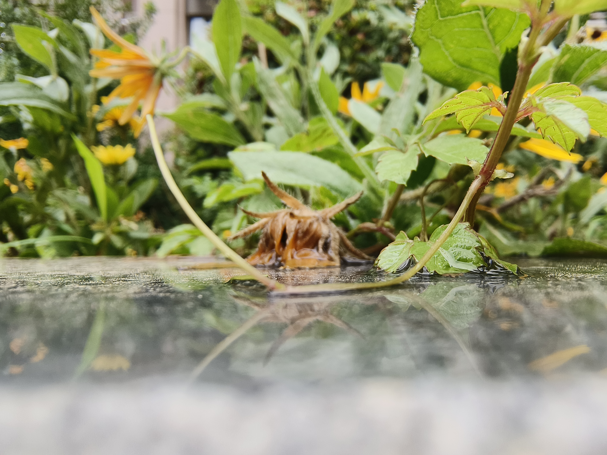
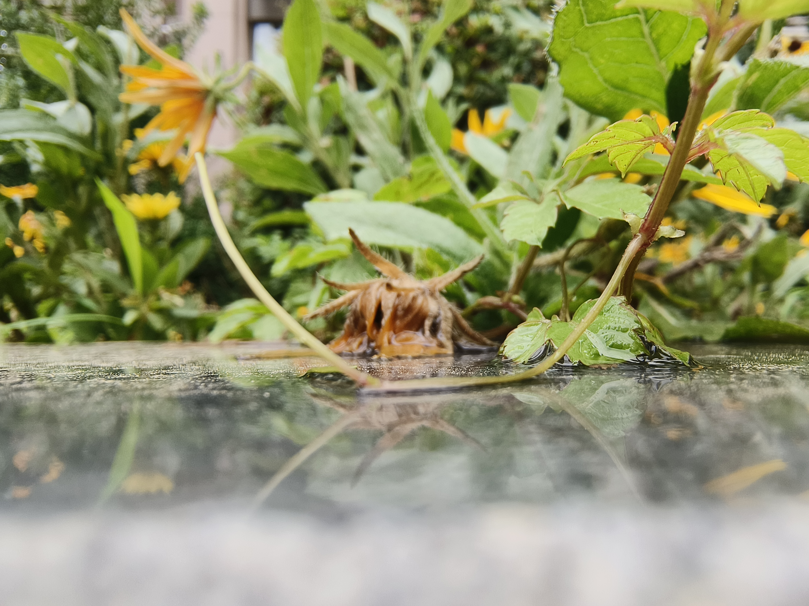

The Tree in the Valley That Blooms When Startled
山谷中受惊会开花的树
A flat, wide wooden boat rows
amidst the upright ink mountains,
扁宽的木船在直的墨山中间划着
Looking straight up high,
抬头正上方高处
On each steep cliff, grows a slender tree,
两侧峭壁分别长着一棵瘦树
With tiny leaves of a dark green hue.
暗绿色小的叶
As the boat sails by,
船驶过
Suddenly,
all leaves of one tree turn into slightly larger,
突然其中一棵树的所有叶子都变成了稍大的
Dense pink blossoms,
粉色浓密的花
The boatman says,
船夫说
When this kind of tree is startled, it blooms.
这种树受到惊吓就会开花


 
